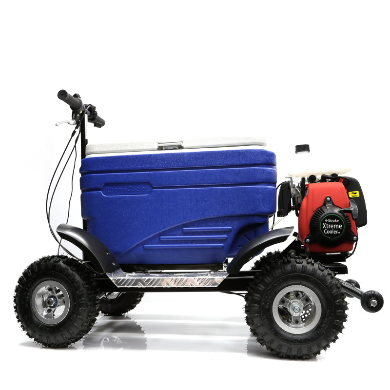
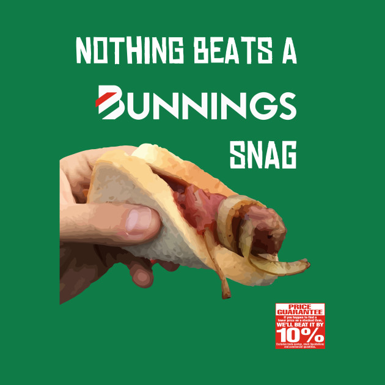
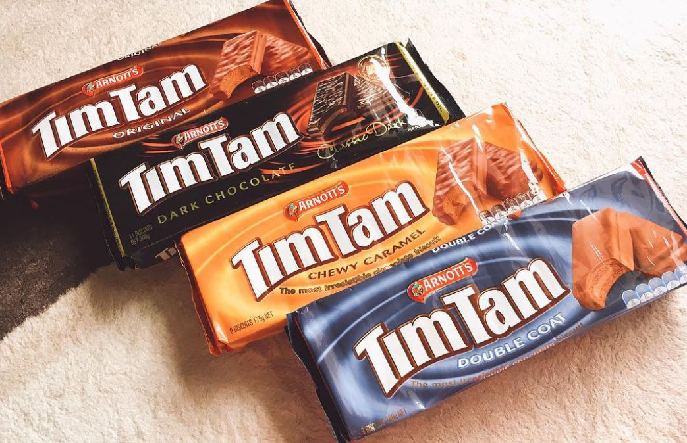
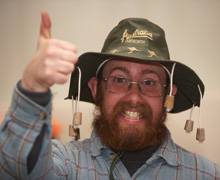
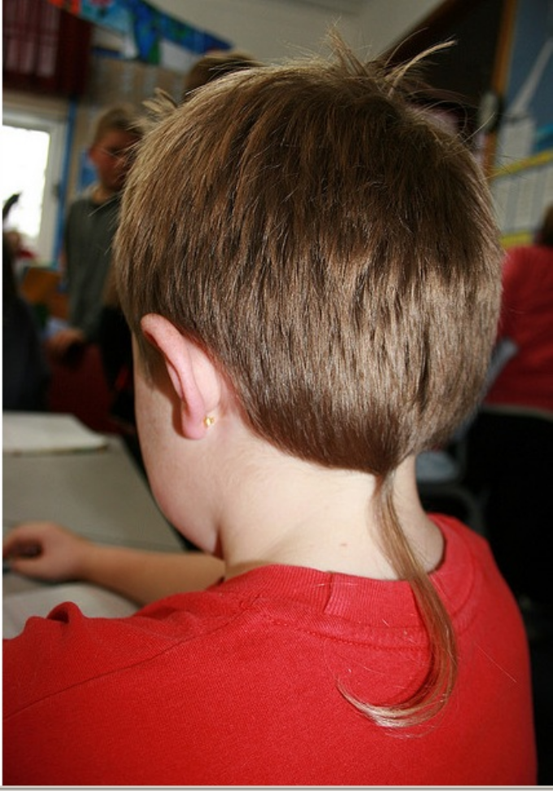
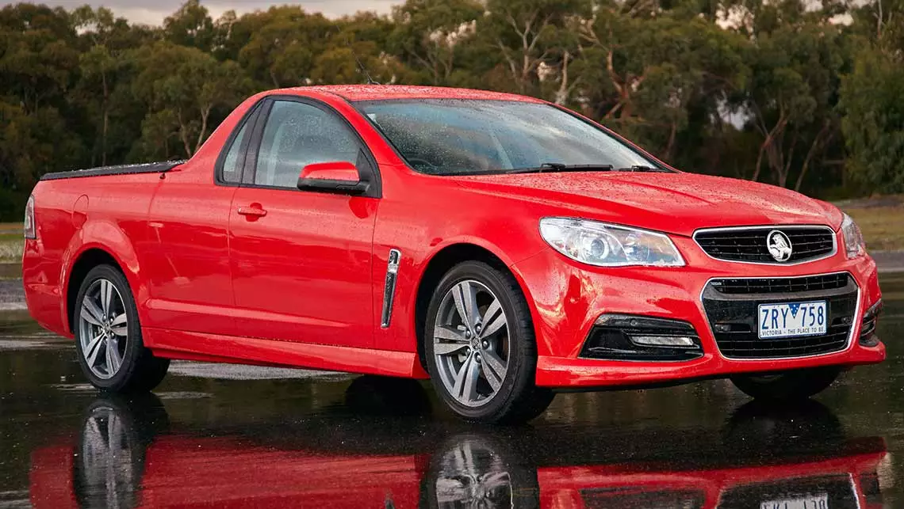
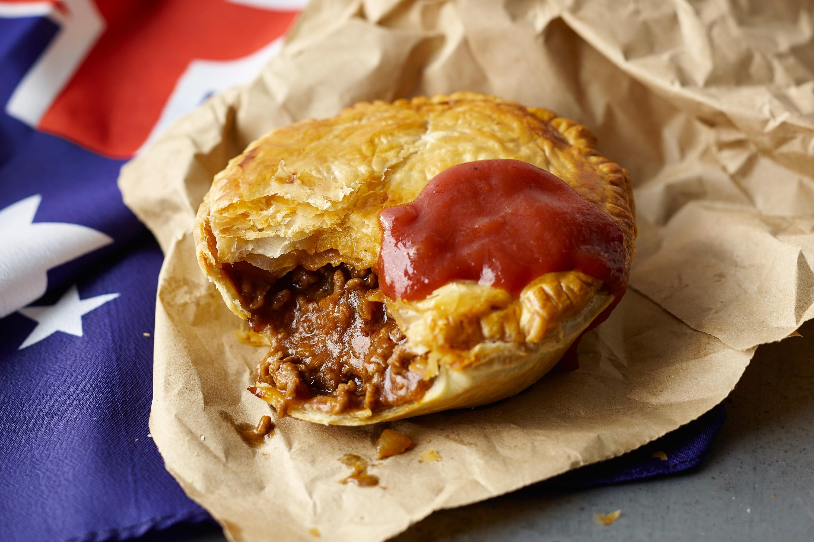
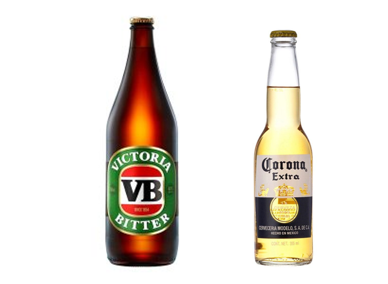
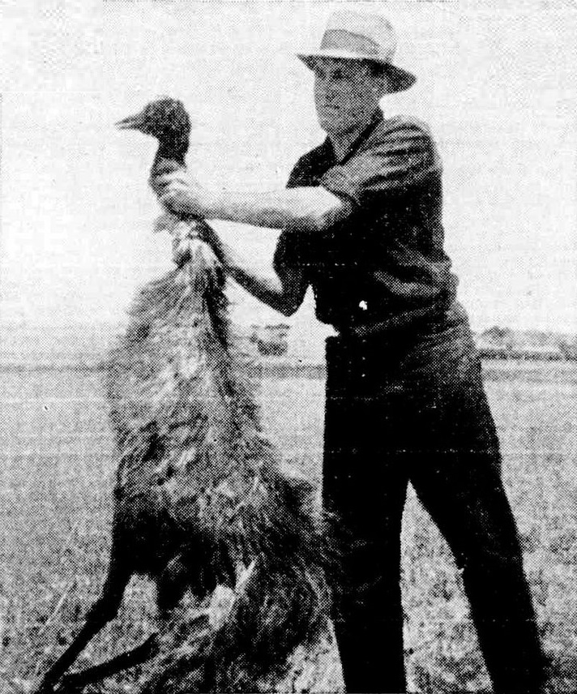
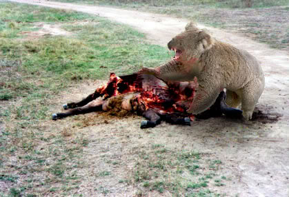

Aussie Wiki

Welcome to the Aussie Wiki website
--=={For any suggestions email us at: EverythingAustraliaSuggestions@gmail.com}==--
=========================================================================================================================================================
Vegemite

Vegemite, the national spread of Australia, it as been the beloved spread of Australia since 1922. It is black and salty in taste, it has been used in the making of items such as Vegemite beer and Vegemite chocolate.
Motorised Eskys
The motorised esky, one of the national vehicles of Australia. You can cool your beer while doing burnots and races in the street.
Bunnings Snag
Nothin beats a Bunnings snag. The Bunnings snag is one of Australia's most beloved dishes of all time.It can come with things like soft drink, you can also have onion and tomato sauce.
TimTams
TimTams are Australia's Favorite snack. It comes in flavors such as Original (plain chocolate),Classic Dark, White, Chewy Caramel and Double Coat.
Cork Hats
An authentic Australian is never far away from their cork hat, it is one of Australia's greatest creations.
Rat Tails
The rat tail, the most repulsive yet beautiful of all forms of hair. It is used widely around our country, no matter where you are, some bogan will have a rat tail.
Holden Ute
I mentioned the motorised esky as one of Australia's national vehicles, well the Ute is the national vehicle of Australia. No matter where you goe in australai you will find Ute's, from the outback to the city.
Meat Pie
Meat Pie's, every footy game without doubt will have a place where you can get a meat pie,its practically Australia's national dish. It consists of a usually small pie shell with a top, inside is either beef or ham in a gooey sauce.
Corona & VB
VB and Corona, the 2 main competitors in the battle of the beer. They both pretty muchtaste like horse piss but in my opinion VB is slightly better.
The Great Emu War
The Emu War, where do I start. There was a problem in Australia in 1932, we had too many emu's. The government had had enough and waged a war on the emu's. They couldn't spare too many soldiers so there where only about 3 guys with guns and a ton of bullets. Long story short the government killed tiny amount of the emu population and effectively lost the war.
Clive Palmer
Clive Palmer, nicknamed blubba the hut, is the biggest boy in parliament house. (probs ate too many meat pies).
Drop Bears
The most ferocious beast in the outback. Many a traveler have fallen victim to this legendary beast.